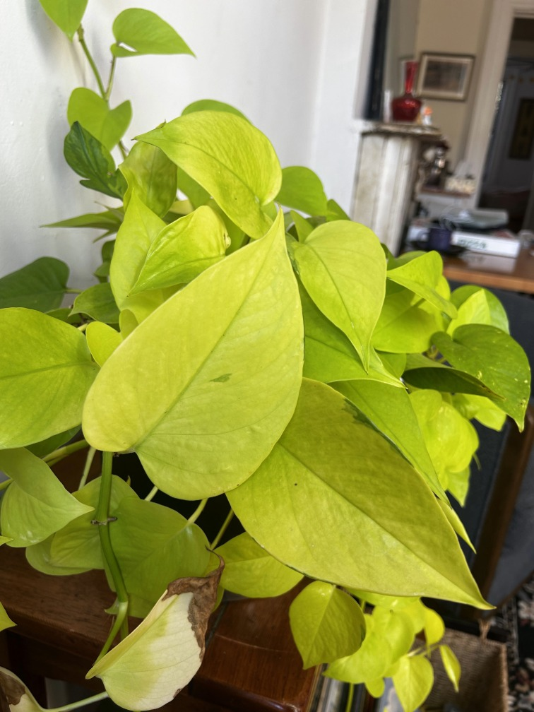
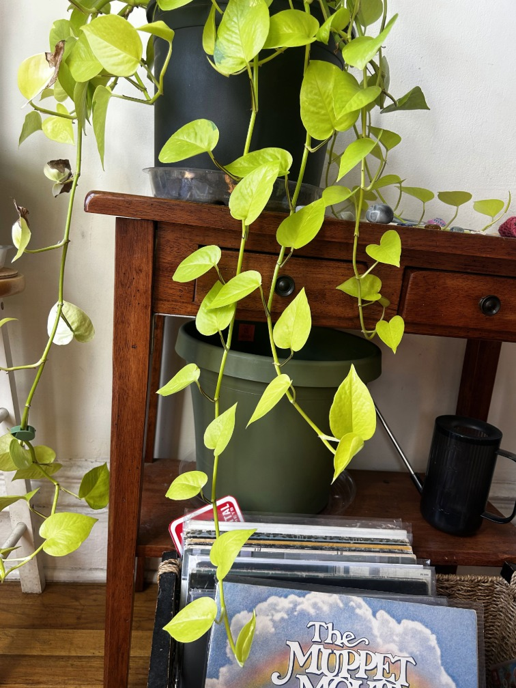
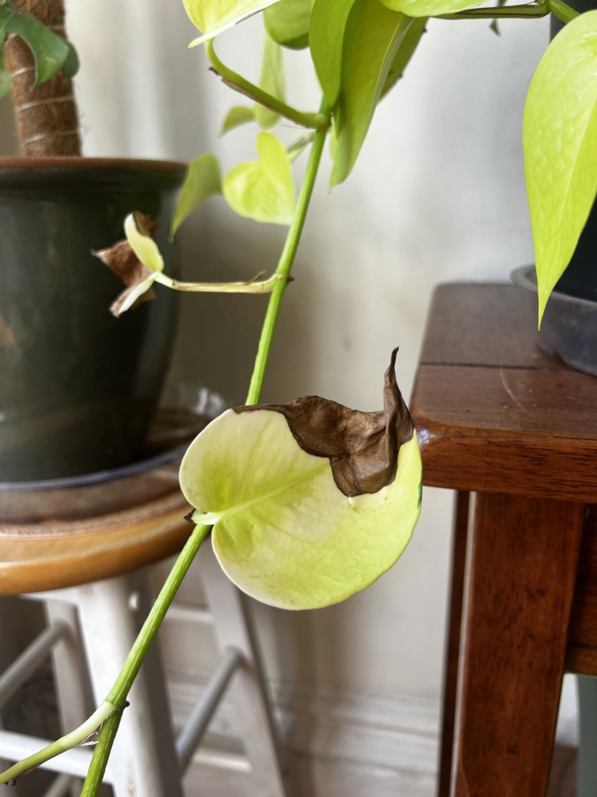
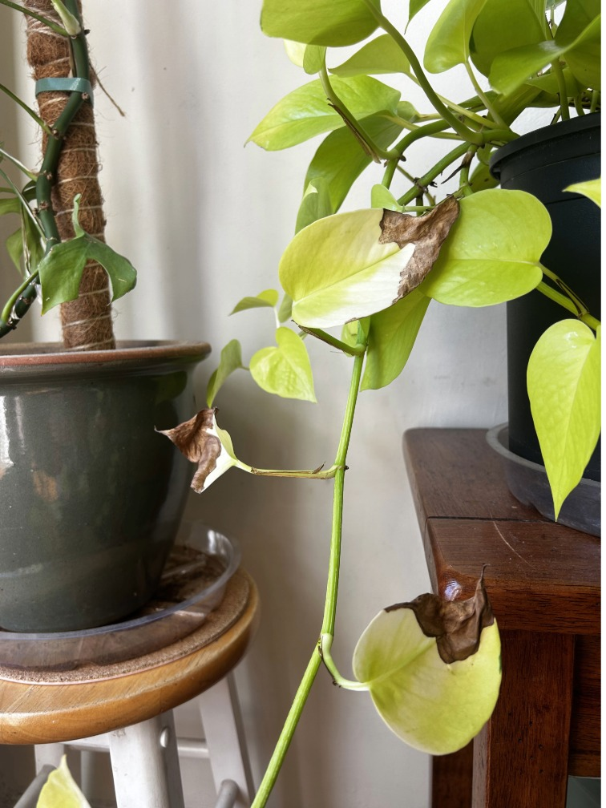

There are a variety of species of philodendrons, but this page will specifically focus on the Philodendron Neon.
The Philodendron Neon is characterized by its climbing vines and bright, lime-green leaves.
This plant can flourish in a variety of different environments. From low-light rooms, to bright and indirect sunlight, you can have this plant in a dark office, or in your windowsill.
For this plant, use a pot with good drainage, and water it once a week to every other week. Or when the top inch of the soil is dry. Additionally, you can use any kind of common soil mix for this plant, although many manufacturers make mixes dedicated to houseplants.
 |
 |
|
 |  |